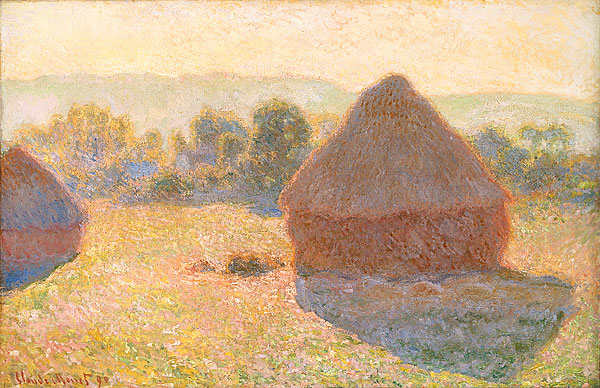

<head>
<meta charset="UTF-8" />
<meta name="keywords" content="drawing, painting" />
<meta name="description" content="drawings by Sunjy" />
<title>Sunjy</title>
<link rel="shortcut icon" type="image/x-icon" href="../../mImages/mCommon/favicon.ico" media="screen" />
<link rel="stylesheet" type="text/css" href="../../mCsses/mCommon/mCssA.css" />
<link rel="stylesheet" type="text/css" href="../../mCsses/mCommon/mCssB.css" />
<link rel="stylesheet" type="text/css" href="../../mCsses/mCommon/mCssC.css" />
<link rel="stylesheet" type="text/css" href="../../mCsses/mCommon/mCssD.css" />
<link rel="stylesheet" type="text/css" href="../../mCsses/mContent/mCssA.css" />
<link rel="stylesheet" type="text/css" href="../../mCsses/mContent/mCssB.css" />
<link rel="stylesheet" type="text/css" href="../../mCsses/mContent/mCssC.css" />
<link rel="stylesheet" type="text/css" href="../../mCsses/mContent/mCssD.css" />
</head>
<script type="text/javascript" src="../../mScripts/mContent/mContentAA.js" /></script>
<script type="text/javascript" src="../../mScripts/mContent/mContentAB.js" /></script>
<script type="text/javascript" src="../../mScripts/mContent/mContentAC.js" /></script>
<script type="text/javascript" src="../../mScripts/mContent/mContentAD.js" /></script>
<script type="text/javascript"></script> 
<script type="text/javascript">
document.write('<div class="mImgAbsolute"></div>');
/*
document.write('<p class="mFontSizeBColor" />From a white paper...</p>');
document.write('<table class="center"><tr><td>');
document.write('');
document.write('</td></tr></table>');
*/
</script>


<script type="text/javascript">
document.write('<p class="mFontSizeBColor" />Meules, milieu du jour</p>');
document.write('<p class="mFontSizeSColor" />“Meules, milieu du jour” by Claude Monet is the original French title, which means ‘Stacks middle of the Day” and is part of a series of piles of harvested wheat.<br><br>The series consists of twenty-five canvas, which Monet began near the end of the summer of 1890, and though Monet also produced earlier paintings using this same stack subject.<br><br>The impressionist series is famous for how Monet repeated the same theme to show the different light and atmosphere at different times of day, across the seasons, and in many types of weather.<br><br>Monet’s Haystacks series is one of his earliest to rely on repetition of a subject to illustrate a subtle difference in color perception across variations of times of day, seasons, and weather.<br><br>The stacks belonged to Monet’s neighbor, and Monet noticed from his farm the way the light changed on the stacks. Monet started with two canvases, a sunny and an overcast version.<br><br>But Monet soon found he could not catch the ever-changing light and mood on just two paintings.<br><br>Although he began painting the stacks en Plein air, Monet later revised his first impressions in his studio, both to generate contrast and to keep the harmony within the series.<br><br>The Haystacks series was a financial success for Monet. Every painting sold within days when the Haystack series was first exhibited in 1891.<br><br>The show met with great public acclaim, and as most of the pictures sold quickly, Monet’s prices began to rise steeply.<br><br>As a result, he was able to buy outright for his house and grounds at Giverny and to start constructing a waterlily pond. After years of mere subsistence living, he was able to enjoy financial success<br></p>');
document.write('<table class="center" /><tr><td>');
document.write('<br>The series consists of twenty-five canvas, which Monet began near the end of the summer of 1890, and though Monet also produced earlier paintings using this same stack subject.<br><br>The impressionist series is famous for how Monet repeated the same theme to show the different light and atmosphere at different times of day, across the seasons, and in many types of weather.<br><br>Monet’s Haystacks series is one of his earliest to rely on repetition of a subject to illustrate a subtle difference in color perception across variations of times of day, seasons, and weather.<br><br>The stacks belonged to Monet’s neighbor, and Monet noticed from his farm the way the light changed on the stacks. Monet started with two canvases, a sunny and an overcast version.<br><br>But Monet soon found he could not catch the ever-changing light and mood on just two paintings.<br><br>Although he began painting the stacks en Plein air, Monet later revised his first impressions in his studio, both to generate contrast and to keep the harmony within the series.<br><br>The Haystacks series was a financial success for Monet. Every painting sold within days when the Haystack series was first exhibited in 1891.<br><br>The show met with great public acclaim, and as most of the pictures sold quickly, Monet’s prices began to rise steeply.<br><br>As a result, he was able to buy outright for his house and grounds at Giverny and to start constructing a waterlily pond. After years of mere subsistence living, he was able to enjoy financial success<br>" />');
document.write('</td></tr></table>');
</script>


